A gruppi
Raccontare un silent book
Dopo la pausa, il laboratorio a gruppi con i silent book.
10 minuti
Pausa
10 minuti · intanto sfogliate i silent book sul tavolo
prima di
cominciare
Come si legge un silent book
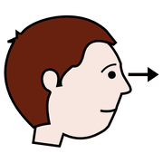
guardare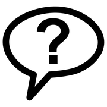
domanda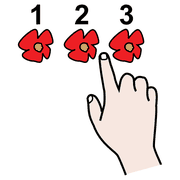
raccontareGuardare con calmaTornare sulle pagine, cercare i dettagli
Domande aperteChe cosa succede? Che cosa prova? E dopo?
Tante lettureNon ce n'è una giusta: ognuno trova la sua storia
Raccontare a voceInsieme, senza che l'adulto imponga la sua
Oggi facciamo una forzatura: scriviamo il testo. È una libertà didattica, dentro un progetto preciso.Fatecela passare!
la
consegna
Raccontare un silent book
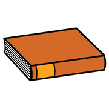
libro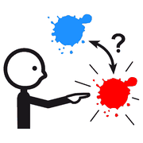
scegliere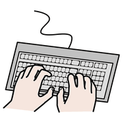
scrivere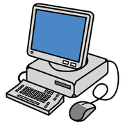
computer1 · SfogliatePersonaggio, problema, cambiamento
2 · SceglieteUn destinatario reale
3 · ScriveteLa storia con l'AI, 2-3 immagini, tutto in Canva
4 · CaricateNegli ultimi 5 minuti, tutto sul Padlet
Strumenti: Claude per il testo, Gemini o Canva per le immagini, Canva per mettere insieme la storia.
Quattro strade, scegliete voi
libro
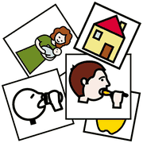
pittogrammi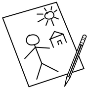
disegnoDare la parola al libroUn testo per ogni doppia pagina, adatto al destinatario
Storia sociale o in CAAFrasi brevi, prima persona, simboli
La pagina che mancaUn prima, un dopo o una scena intermedia
Nuovo protagonistaStessa trama, personaggio diverso creato con l'AI
rispetto
dei diritti
Tradurre un'immagine in parole
guardare
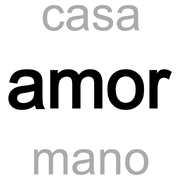
paroladisegnoLe pagine del libro non si caricano nell'AI, per rispetto di autori e illustratori. Le scene si descrivono a parole:
ChiSempre con le stesse parole
Dovee che cosa sta facendo
Emozioneche cosa prova
Stileacquerello, colori tenui…
“Una bambina con il cappotto giallo e gli stivali rossi corre verso il mare; le onde sono alte, lei ride. Stile acquerello, colori tenui, sfondo semplice.”
Canva in 5 passi
computerscrivere
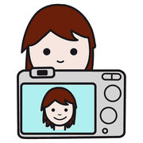
foto- 1 · Entratecanva.com, account gratuito (anche con Google)
- 2 · Create«Crea un design», poi «Presentazione»: una pagina per scena
- 3 · Scrivete«Testo» nel menu a sinistra: il testo della scena
- 4 · Immagini«Caricamenti» per quelle di Gemini, oppure Magic Media in Canva
- 5 · Condividete«Condividi», poi «Copia link» e incollatelo nel Padlet
45 minuti
Ruoli e tempi: decidete voi
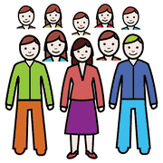
gruppo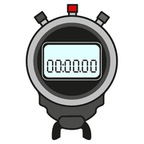
cronometroscrivereScritturaLegge le immagini, scrive i prompt, rivede il testo
ImmaginiCrea 2-3 immagini coerenti
CoordinamentoTiene i tempi e carica sul Padlet
| Dopo | Richiamo |
|---|---|
| 10 minuti | Avete scelto destinatario, strada e ruoli? |
| 25 minuti | Avete la storia? Ora le immagini |
| 40 minuti | Mancano 5 minuti: caricate tutto sul Padlet |